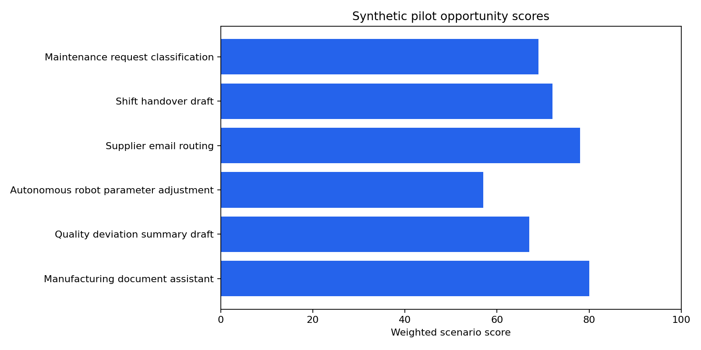

Manufacturing AI Pilot Decision Study
Author: Mohammed Adeen Shaik
Review date: 11 October 2026
Research question
How do assumed value, eligibility gates and pilot evidence affect six fictional opportunity decisions?
Data and provenance
Six developer-authored synthetic proposals in data/opportunities.json.
Source materials are linked from the repository README. Input fingerprints are recorded in the evidence manifest so a reader can identify the exact committed artifacts used in this review.
Method and analytical rationale
evaluate.py applies the implemented deterministic scoring and assessment rules without changing the application database. Benefit calculations use 48 working weeks and assumed adoption.
Findings and interpretation
Fresh deterministic evaluation on 11 October 2026: 4/6 fictional proposals meet the configured pilot gates. Scenario benefit values use assumed adoption, 48 working weeks and an assumed hourly value of released capacity. They are not observed savings.
| name | pilot_eligible | base_net_annual_benefit |
|---|---|---|
| Manufacturing document assistant | True | see JSON |
| Quality deviation summary draft | True | see JSON |
| Autonomous robot parameter adjustment | False | see JSON |
| Supplier email routing | True | see JSON |
| Shift handover draft | False | see JSON |
| Maintenance request classification | True | see JSON |
Limitations
Released capacity is not observed cash savings. Scores are policy choices and do not prove a proposal will succeed. Synthetic approvals and role simulation are not enterprise authorization.
Reproduction
Use the setup commands and input contract in the repository README. Open the notebook catalogue for annotated code and saved outputs. Keep raw records and model binaries local; public reports contain aggregate results or source-embedded figures.
Final visual results

Reproduced aggregate figure: scenario-scores.png.